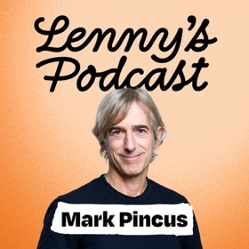
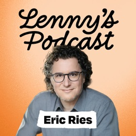
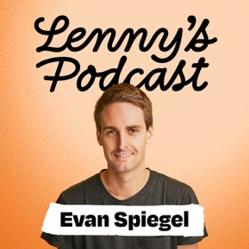
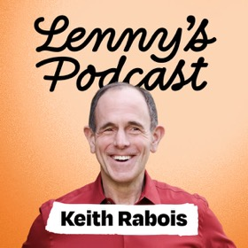
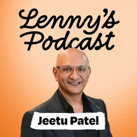
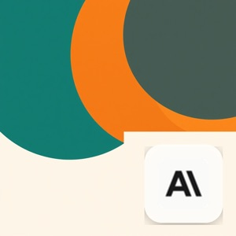
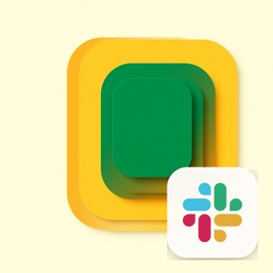

跨国深谈
最新
最热
←
创业与行业
跨国深谈
✕
浏览
主题
试试
智能体
护城河
Anthropic
增长
全部主题
创业与行业
13
产品方法
10
组织与领导力
9
智能体
9
职业与个人成长
8
AI 编程
7
增长与销售
4
AI 安全
3
← 回首页
创业与行业
13 集
同时属于
产品方法
3
组织与领导力
3
AI 安全
2
智能体
2
来自
Lenny's Podcast
9
The a16z Show
1
Big Technology Podcast
1
SingjuPost 转录
1
Latent Space
1
时间
2026 年
10
2025 年
3
最新
最早
最长
|
Sriram Krishnan：Kimi K3 将改写 AI 行业版图
如果你提供有价值的产品，资本主义会负责处理其余的一切。
Sriram Krishnan
· 高级政策顾问
AI 安全
创业与行业
AI 安全
AI 悬崖边？数据中心次级债与 SpaceX 缩水
现在举证责任在怀疑者身上,但一旦你有了令人失望的信息的缓慢渗透,那么举证责任就开始转移到乐观者身上了。
Alex
创业与行业
AI 安全
创业与行业
OpenClaw创始人：为何80%的应用将消失
看起来每个人都在追逐某种集中的上帝智能。而在过去十天左右涌现出来的似乎是群体智能和社区智能。
Raphael Schaad
· OpenClaw 创始人
智能体
创业与行业
Zynga 创始人 Mark Pincus：想做出伟大产品，先学会「合法地抄袭」
你的直觉 95% 的时候是对的，而你的想法 75% 的时候是错的，或者充其量只有 25% 的时候是对的。
Mark Pincus
· Zynga 创始人
产品方法
创业与行业

Satya Nadella 谈 AI 时代平台逻辑:私有评估是最大 IP
拥有私有评估可能是最大的知识产权。
Satya Nadella
· 微软 CEO
创业与行业
智能体
《精益创业》作者 Eric Ries 新作导读：好公司为什么会「变坏」
摧毁它们的东西不是竞争。
Eric Ries
· 作者
创业与行业
组织与领导力

Snap 创始人 Evan Spiegel:做硬件、搞创新、用 AI,为什么人性比技术更重要
15 年前，我们基本上认识到软件不是护城河，这是今天每个人都在随着 AI 发现的事情。
Evan Spiegel
· Snap 创始人
产品方法
创业与行业

Keith Rabois 的用人铁律：别招熟手、别做客户访谈、公开批评
你建立的团队就是你建立的公司。
Keith Rabois
· 首席运营官
组织与领导力
创业与行业

1500 亿美元的隐形 AI 公司创始人：恐惧源于无知，最好的工作是独自安静地完成
如果你在家对 AI 感到非常焦虑，你能做的最好的事情就是花时间去理解，你很快就会看到它的局限性。
Qasar Younis
· 创始人
创业与行业
创业与行业
对话 Cisco CPO Jeetu Patel:大公司如何不掉队 AI 时代
大多数人在大公司里认为的是大公司不进行实验。事实上并非如此。大公司经常进行实验。大公司不做的是当一个实验
Jeetu Patel
· Cisco CPO
组织与领导力
创业与行业

Surge AI 创始人 Edwin Chen:我们教模型追逐多巴胺,而非真理
他们认为你可以只是把人力扔向问题并获得好的数据,但这完全是错的。
Edwin Chen
· Surge AI 创始人
创业与行业

把自家产品骂成「一坨狗屎」：Stewart Butterfield 的产品哲学
我觉得我们现在拥有的东西就是一大坨狗屎。
Stewart Butterfield
· founder
产品方法
创业与行业

AI 教母李飞飞:从 ImageNet 到空间智能,与首个 3D 世界模型 Marble
我觉得 AGI 更多是一个营销术语,而不是科学术语,作为科学家而非技术专家来说。
Dr. Fei-Fei Li
· AI 教母
创业与行业
按公司
Anthropic
15 集
OpenAI
9 集
Slack
6 集
WorkOS
5 集
Google
5 集
Mercury
4 集
全部 23 家(≥3 集)…
随便看看
随便看一集